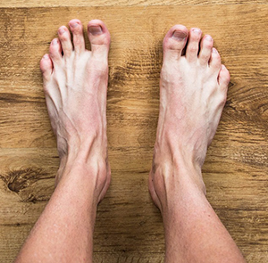

Some of my absolute
FAVORITE feet.
I have so many and it's very hard to pic favorites but I wanted to share what really gets me going.
 |
These are fucking gorgeous! I could suck on these all day. I might even choke on those big toes. God. The toes are so long, the entire foot reminds me of a stalk of celery. But the feet are so wonderfully thin I can only imagine they are attached to a slender little woman. The proportions drive me crazy and the beautiful blue shows she's clean and kept. |
 |
This is something I go nuts for. We all love being teased. It's what gets us turned on and it's the most fun. Everything after is just sex. Just looking at the milky little toes poking out of the warmers teases me so badly! I want to lift the fabric and get a glimpse of everything else! BUT seeing it all would not be anywhere near as fun as wondering. I would be in ecstasy with these caressing my face and maybe other things. :D |
|  | Simple, which makes it elegant. The veins, the tendons, the bones are all there for you to see in perfect, sexy, form. Not perfectly symmetrical which gives a unique and beautiful finger print. I love the angle because I can stare at them and imagine they are mine. I just want to lean down and rub them. Run my fingers along the curves of each toe. There is no dancing around it. This picture just cuts right to what I want. I could rest my cheek against these for hours. |